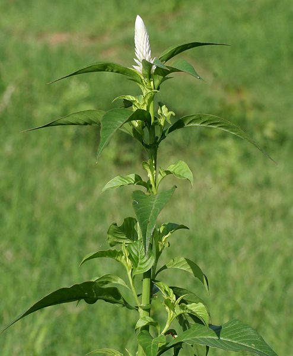

सफ़ेद मुर्गाSilver Cockscomb
Celosia argentea · Amaranthaceae · FLR-0221

- Scientific name वैज्ञानिक नाम
- Celosia argentea L.
- Family कुल
- Amaranthaceae
- Hindi हिंदी
- सफ़ेद मुर्गा / सिलियारी
- Local names स्थानीय नाम
- safed murga, safed murg, siliyari, silyari, silver cockscomb
- Status here यहाँ की स्थिति
- native
- Movement आवागमन
- Resident, here all year
- IUCN IUCN
- not evaluated
- Review समीक्षा
- audited and independently read
When to look कब देखें
Expected mainly in June, July, August, September, October, November. मुख्यतः जून, जुलाई, अगस्त, सितंबर, अक्टूबर, नवंबर में अपेक्षित।
Uses and possibilities उपयोग और संभावनाएँ
“Traditional medicine” means a documented traditional use, not a claim that it works. Nothing on this page is medical advice.
Drawn from the documented uses in the profile below, where each is labelled traditional, current or a research lead. All uses →
Tell it apart from इनसे अलग पहचानें
सफ़ेद मुर्गा / Silver Cockscomb
Celosia argentea L. — Amaranthaceae
सफ़ेद मुर्गा — हर गाँव की बाग़ में, खेत की किनार में दिखता है। पूर्वी यूपी में इसे "हरी सब्जी" कहते हैं — पत्तियाँ छोटी, कोमल, और सफ़ेद फूलों का शानदार गुच्छा (raceme)। बरसात शुरू होते ही जमीन में अपने आप उग आता है या किसान का बीज बोता है। चौलाई, बाजरा, और तरकारियों की कतार में उगता है। पत्तियों को तोड़कर "सफ़ेद मुर्गा का साग" बना सकते हैं। बीजों में प्रोटीन और फाइबर — ये भूसी पशु को खिलाते हैं। आयुर्वेद में खून के रोगों में।
Quick Identification त्वरित पहचान
| Feature | Description |
|---|---|
| Height & Habit | Erect annual herb, 30–80 cm tall; branched, forming a bushy plant |
| Leaves | Alternate, ovate-lanceolate, 5–12 cm long, with smooth or slightly wavy margins |
| Flowers | Very small (2–3 mm), silvery-white to cream, densely packed in long, dense spikes (racemes), 5–15 cm |
| Inflorescence | Terminal or axillary spikes; flowers overlapping like roof tiles (imbricate) |
| Stem | Erect, branched, green or sometimes reddish tinged |
| Seeds | Tiny, black, shiny, lens-shaped, 1–1.5 mm |
Field tip: An erect annual with narrow, lance-shaped leaves and dense, tall, silvery-white flower spikes — unmistakable in monsoon vegetable gardens. The name "murga" (rooster) refers to the feathery cockscomb-like appearance of the flower clusters. Young leaves are tender and edible.
Morphology आकारिकी
Biometrics:
| Measurement | Range |
|---|---|
| Plant height | 30–80 cm |
| Leaf length | 5–12 cm |
| Leaf width | 1–3 cm |
| Spike length | 5–15 cm |
| Flower diameter | 2–3 mm |
Stem and Branching: Erect, unbranched or moderately branched at the base; glabrous or finely hairy; green or sometimes reddish. Internodes moderately long (2–5 cm).
Leaves: Alternate, stipulate (stipules lacking in this genus); blade ovate-lanceolate, acute, base slightly narrowed, margins entire (smooth), texture smooth and slightly fleshy; venation prominent; petioles 0.5–2 cm.
Inflorescence: Terminal and axillary spikes (racemes), 5–15 cm long at maturity. Flowers imbricate (overlapping), spirally arranged around the axis.
Flower: Very small; sepals 5, membranous, pale; petals 5, small, silvery-white to cream; stamens 5, free or partly united; style 2–3, short.
Fruit: A small capsule (utricle), 2–3 mm, indehiscent or bursting irregularly; containing 1–5 shiny black seeds.
हिंदी: पूरा पौधा हरा-भरा, डंडी सीधी।
पत्ती नरम, तोड़ने में आसान — साग के लिए परफेक्ट।
फूल सफ़ेद, सिल्वरी, लंबी स्पाइक में।
बीज काले, छोटे, चमकदार।
Behaviour & Ecology व्यवहार और पारिस्थितिकी
Growing season: Celosia argentea is a summer-monsoon annual. It germinates in June with the onset of rains and grows rapidly through July and August. Peak flowering occurs in August and September, with seed maturation in October.
Nitrogen accumulation: Like most Amaranthaceae members, Celosia may accumulate soil nitrates efficiently and is sometimes used as a green manure crop to improve soil nitrogen.
Pollination: Flowers are inconspicuous and wind-pollinated. No nectar is produced; pollen is the only reward.
Seed production and dispersal: One plant produces 100–500 seeds. Seeds are very small (1 mm) and light, allowing wind dispersal. They may be dispersed by water during monsoon floods.
Ecological niche: In cultivated fields and village gardens, Celosia forms part of the understory of crops. It is a useful crop-associated species — not purely a weed, but not a deliberately cultivated crop in most of eastern UP.
हिंदी: बारिश के साथ अंकुरित होता है।
जल्दी बढ़ता है — 30-50 दिन में फूलने लायक़।
हवा से परागण।
बीज हल्के, हवा से दूर तक जाते हैं।
Life Cycle / Phenology जीवन चक्र
| Month / Season | Event |
|---|---|
| June | Seed germination with monsoon rains; seedling growth |
| July–August | Rapid vegetative growth; plant reaches full height |
| August–September | Flowering; progressively upward along spike |
| September–October | Seed maturation and dispersal |
| October–November | Senescence; plants die as temperatures drop |
The complete life cycle is 120–150 days from germination to seed maturity.
हिंदी: जून में अंकुरण।
जुलाई-अगस्त में वृद्धि।
सितंबर में फूल-फल।
अक्टूबर में मर जाता है।
Associated Species / Interactions संबंधित प्रजातियाँ
- Crop-associated: Grows alongside Bathua, Amaranth, and other monsoon greens in village gardens
- Nitrogen-fixer indicator: Often indicates plots where nitrogen has been added (as leaves darken with rich soil)
- Livestock forage: Dried plants and seeds are used as fodder and feed supplement
Agricultural / Human Relevance कृषि प्रासंगिकता
Food use — leafy green: In eastern UP villages, especially among poorer communities, the young tender leaves are cooked as saag (spinach-like preparation). The leaves are boiled with salt and a little oil, and served as a side dish. No contraindications are reported, and oxalate content is lower than in spinach (Spinacia oleracea). This use is documented in ICAR extension materials.
Seed use: The seeds are sometimes ground and mixed into flour for nutritional supplementation. They contain protein and dietary fibre.
Green manure: In some farming systems, the whole plant is incorporated into soil as a green manure crop to add organic matter and some nitrogen.
Traditional medicine: According to Kirtikar & Basu (1935), the leaves are used in folk medicine to treat burning of the feet and in external poultices for burns and wounds.
हिंदी: साग के लिए पत्तियाँ उबाली जाती हैं।
बीज पीस कर आटे में मिलाई जाती हैं।
खेत में हरी खाद के रूप में काम में लाई जाती हैं।
जलन और घाव के इलाज में पारंपरिक।
Expected Locally स्थानीय रूप से अपेक्षित
Not a field record. Written from published accounts for eastern Uttar Pradesh. No confirmed local sighting yet — if you have seen it, that is what the atlas needs.
अभी तक स्थानीय पुष्टि नहीं। यह विवरण प्रकाशित स्रोतों से है, किसी अवलोकन से नहीं।
Celosia argentea is to be expected in monsoon vegetable gardens and cultivated fields throughout Basti district, from June to October. The species is probably present in most village gardens during this period. Look in gardens alongside other monsoon greens, especially where leafy vegetables are grown for home consumption. The first local record would be a photograph showing the plants growing in a garden with the characteristic white flower spikes, with date and location.
Distribution वितरण
Global range: Widespread throughout tropical Asia, from the Persian Gulf to Southeast Asia; pantropical in distribution.
In India: Found throughout the country, especially in monsoon vegetable gardens from coastal plains to elevations of about 1,500 m.
In Uttar Pradesh: Common in monsoon gardens across all districts; especially abundant in irrigated regions.
In Basti district / eastern UP: Expected in village gardens and cultivated fields during the monsoon season (June–October).
Research Questions शोध प्रश्न
- How much protein and fibre do the leaves of Celosia argentea contain compared to common spinach? — Analyze fresh leaf samples from local plants; compare nutritional content.
- What is the historical extent of leafy green use of this species in Basti villages? / बस्ती के गाँवों में सफ़ेद मुर्गे की पत्तियों का कितना इस्तेमाल होता रहा है? — Interview village women and elders about food use.
- How quickly do seeds germinate under monsoon conditions? — Conduct germination trials with fresh seeds from local plants.
- Does the incorporation of Celosia as a green manure crop significantly improve wheat yield in the rabi season? — Set up a trial with green manure plots vs. control plots.
- What is the seed production of one plant in the field? — Count mature seeds on 10 plants; calculate average.
Similar Species मिलती-जुलती प्रजातियाँ
| Species | How to tell apart | हिंदी | |
|---|---|---|---|
| Celosia cristata (Cockscomb - ornamental) | Flower head is a crested or velvety cockscomb (not a spike); much more compact | मुर्गे की कलंगी — फूल चपटा, लहरदार | |
| Amaranthus viridis ([[jangli_chaulai\ | Slender Amaranth]]) | Similar size; flower spikes greenish, more loose; leaves slightly different shape | चौलाई — फूल हरे, सिलियारी की तरह सफ़ेद नहीं |
| Gomphrena globosa (Globe Amaranth) | Compact, dense flower heads that are spherical (not elongated spikes) | गुलाब फूल — गोल फूल |
Field rule: An erect annual with narrow, lance-shaped green leaves and dense, tall, silvery-white flower spikes in monsoon gardens — that has edible tender leaves — is Celosia argentea.
Taxonomy & Classification वर्गीकरण
Original description. Celosia argentea was described by Carl Linnaeus in 1753 in Species Plantarum, p. 205. Type locality: not specified, but native to Asia. The genus name Celosia is derived from the Greek keleos (burning), referring to the hot appearance of the flower heads. The epithet argentea means "silvery," referring to the colour of the flowers.
Subspecies. Monotypic — no subspecies currently recognised, though two main cultivar groups (spicata and cristata forms) are grown ornamentally.
Family and order placement. Placed in the order Caryophyllales, family Amaranthaceae, subfamily Amaranthoideae. The genus Celosia contains about 60 species, mostly from tropical regions.
Phylogenetic notes. Celosia argentea is closely related to C. cristata, the two differing mainly in flower inflorescence type (spike vs. crested).
IUCN status rationale. Not evaluated. The species has a stable, wide distribution across tropical Asia with no documented conservation threats.
Photo Gallery फोटो गैलरी
Note: Add field photos tomedia/species/safed_murga/
फोटो निर्देश: बाग़ में पूरा पौधा, सफ़ेद फूलों की स्पाइक, नरम पत्तियाँ, और कच्चा पौधा साग के लिए।
Photos needed आवश्यक फोटो
- [ ] Plant in village garden (बाग़ में पूरा पौधा)
- [ ] Silvery-white flower spike (सफ़ेद फूलों की स्पाइक — विस्तार)
- [ ] Tender leaves (नरम पत्तियाँ)
- [ ] Young plant with edible leaves (साग के लिए तैयार पौधा)
No photos yet — add field photos to media/species/safed_murga/ and run node scripts/sync_photos.js.
References संदर्भ
- Linnaeus, C. (1753). Species Plantarum, 1: 205. Laurentii Salvii, Holmiae. [original description]
- Kirtikar, K.R. & Basu, B.D. (1935). Indian Medicinal Plants, Vol. II. Lalit Mohan Basu, Allahabad.
- Hooker, J.D. (1885). Flora of British India, Vol. 4. L. Reeve & Co., London.
- Indian Council of Agricultural Research (2021). Handbook of Agriculture. ICAR, New Delhi.
- Botanical Survey of India. State Flora Series: Flora of Uttar Pradesh. BSI, Kolkata.
- GBIF Occurrence Data — Celosia argentea, India (2010–2025).
Source file: species/flora/crops_associated/safed_murga.md